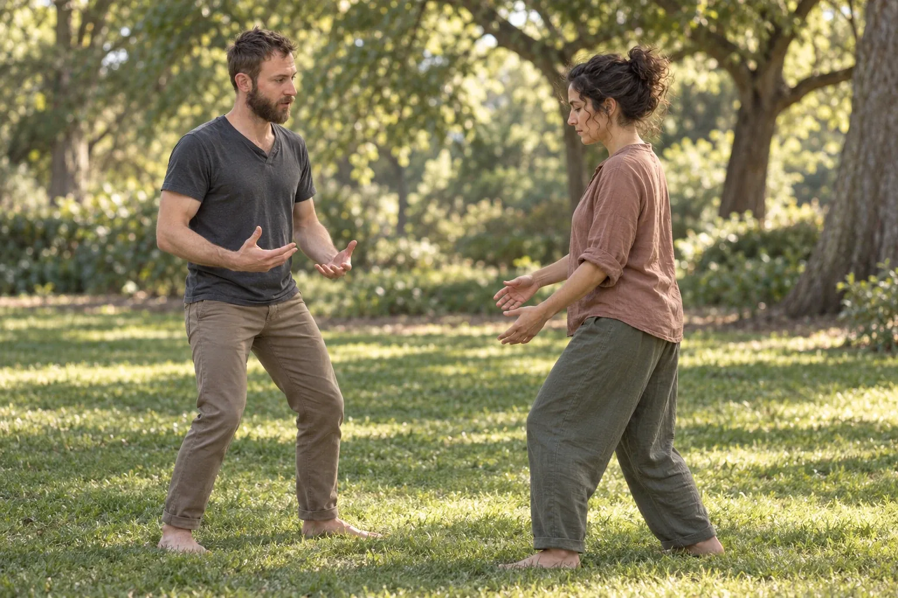

Habits of Being
A ten-week bodywork and relational practice cohort with John Adams in Western Massachusetts.
For people who’ve done inner work and want to feel it become more available in the body, in movement, and in relationship.
You’ll receive ten one-to-one Structural Integration sessions, meet weekly with a small group, and practice noticing how old patterns live in posture, breath, contact, and presence.
A cohort of 6 to 10 people, starting in mid-October. Applications are open through Wednesday, October 7.
Applications for this fall have closed. Thank you to everyone who applied.
The taster evening is Tuesday, September 29, in Northampton.

Four things to know before you decide.
- Why
- The transformative potential of bodywork opens into a whole different dimension when we work with the relational somatics of what arises on the table.
- What
- A study of how you “do” being yourself. Ten one-to-one Structural Integration sessions with me, ten Wednesday evenings with the group, and a little practice in between.
- Who
- People who’ve done some inner work and want to take it into the body and into relationship.
- Terms
- $4,500, with a limited number of supported-rate places. 5–6 hours of attention a week. Applications are open through Wednesday, October 7.Applications for this fall have closed.
A shift in your body is also a shift in how you relate.
That’s the premise of these ten weeks, so they work with both at once.
Structural Integration, the ten-session series Ida Rolf developed, helps your body find an easier relationship with gravity: better supported, more at rest, more available. Your joints and movements coordinate with more grace, ease, pleasure and power.
When that changes, the way you meet people changes too. Habits like bracing, holding back or pushing through didn’t form in a vacuum, and they don’t live in one.
So for a shift to last, it needs practice with others: trying out a new way of being while you’re seen. Knowing yourself in a new experience of yourself.
That’s why each member of the cohort receives the ten sessions with me individually, weekly. And each week the whole group meets to deepen those shifts, through a rich variety of exercises and practices.
“Rooting into the relationship to gravity, to earth, where we’re held, supported. Where we belong, with dignity. And relating to others from there.”
You’ll study how you “do” being yourself.
Ten weeks of study in your habits of being, and the aliveness on the other side of them.
You’ll get to know your own patterns: how they live in your posture, breath, contact and presence, and how they show up with other people.
We’ll explore what motivates those patterns to persist, and the truer expressions of yourself that they obscure.
Each week holds a session with me, an evening with the group, and a little practice in between.
It asks for 5–6 hours of your attention a week, for ten weeks.
On the table: One individual Structural Integration session with me each week, about two hours. The Rolf ten-series, worked with you rather than on you.
In the group: One Wednesday-evening group session each week, two and a half hours, with the cohort: a rich variety of exercises and practices to deepen and integrate what’s shifting.
Journaling: Journaling prompts between sessions.
Meditation: Two guided somatic meditations each week.
There’s limited availability for an upgrade that adds three one-on-one coaching sessions over the course of the cohort.
“What has impacted me even more, however, is what can unfold beyond the purely physical.”
It’s for people ready to take their inner work into the body and into relationship.
You’ll likely feel at home here if some of these are true.
- You’ve done some personal development work and want to deepen it into your body and your relationships.
- You’ve built stability, and you’re ready to prioritize what that stability was intended to support.
- You’re in a life transition, like an empty nest or retirement, and now is the time to prioritize yourself and your relationships.
- You’re ready to take a deeper level of responsibility for your life and your creative authority.
- You hunger for wholeness, fullness, awakening.
What it asks of you
- You’re stable, and generally healthy and regulated.
- You’re willing to commit 5–6 hours of high-quality attention each week, for all ten weeks.
Who it isn’t for
This is not a therapy group, crisis support, or a substitute for medical or mental health care. It’s best suited for people with enough stability to stay present with sensation, emotion, and group practice.
“He has a beautiful way of creating a container where presence, breath, sensation, and feeling can all be part of the work.”
Short answers before you apply.
What does the tuition cover?
Tuition is $4,500 for the ten weeks: ten individual Structural Integration sessions with me, ten Wednesday-evening group sessions, journaling prompts between sessions, and two guided somatic meditations each week. There are a limited number of supported-rate places.
Isn’t Structural Integration painful?
In contrast to those who have given this work a reputation for being painful, I work with the body’s natural inclination toward what feels good.
Who is John?
I’ve practiced bodywork for fifteen years, contact improvisation for eighteen, and relational facilitation for ten. I trained in Structural Integration at IPSB, under Ed Maupin, a longtime friend of Ida Rolf.
What happens after I apply?
I’ll reach out to set up a short call, so we can both feel whether this is the right fit.
Can I meet you first?
Yes. Come to the taster evening on Tuesday, September 29, in Northampton, or write to me with any question.
Can I ask you something first?
Yes. Write to me any time at talk.to.johnadams@gmail.com.
Can I ask you something?
Yes. Write to me any time at talk.to.johnadams@gmail.com.
Ten weeks, starting in mid-October.
- Dates
- Ten weeks, mid-October to December. I’ll confirm the start week (October 12 or 19) before enrollment.
- Each week
- One individual session with me, about two hours; one Wednesday-evening group session, two and a half hours
- Cohort
- 6 to 10 people
- Where
- Western Massachusetts. I’ll confirm the venue before enrollment.
- Your time
- 5–6 hours of attention a week
- Tuition
- $4,500, with a limited number of supported-rate places
- Applications
- Open through Wednesday, October 7Closed for this fall
The application takes about ten minutes. After you apply, I’ll reach out to set up a short call, so we can both feel whether this is the right fit.
Ask about supported ratesAdd a calendar reminderNot ready today? Keep the date.
People describe being met, not worked on.
These are clients of my one-to-one bodywork, in their own words, shared with their permission.
I’m really grateful to have found John. He has a beautiful way of creating a container where presence, breath, sensation, and feeling can all be part of the work.
I felt genuinely met where I was, and heard—not just in what I was saying, but in the way he listened to my bodymind and let that information become part of the session. His touch brought my awareness to places and patterns I hadn’t been able to access on my own, and opened up a deeper sense of connection with myself.
As a massage therapist myself, I don’t take it for granted to find someone who is both deeply skilled and truly attuned. John is that kind of practitioner. I’m grateful for the work we’ve shared and would wholeheartedly recommend him.
John has an exceptional understanding of the human body, and where we carry stress, tension, strong emotions, and joy. His combination of thoughtful touch and instruction has been instrumental in recovering after hard weeks at work, for both my body and mind.
I’ve had the good fortune to work with John for almost two years. He brings a lot to the table, both literally and figuratively. John’s skills as a bodyworker are exemplary. His hands have a knack for finding what’s happening under the surface, and his gently powerful physical guidance consistently leaves me feeling more stable and balanced in my body.
What has impacted me even more, however, is what can unfold beyond the purely physical. I’ve had a wide range of experiences on the table—from sadness to elation, from the return of distant and dear memories to unexpectedly intense sensations in my body. Every time, without hesitation, John has provided a steady, grounding anchor with his words and hands.
I have never felt rushed, judged, or dismissed. He holds space with gentle encouragement and support, giving me the time to explore whatever arises and integrate what feels meaningful. John’s work is a gift to everyone he serves.
I’ve been seeing John for bodywork for a few years and it is absolutely some of the best bodywork I have ever received. His fascia work is precise, responsive, and hits just the spot. You can tell he is very gifted and dedicated to his work within two minutes on the table. I notice profound changes in my body each session. I have sent many loved ones to John and would highly recommend him to anyone.
John enters his bodywork with deep study, compassionate thoughtfulness, and focused attention. During my session with him, he helped me feel into the places where my body felt stuck and was holding on, and worked with me to release them. Throughout, I did not feel worked ‘on,’ I felt worked ‘with.’ By the time we were through, I experienced a new lightness- and I felt taller! Now, as the days pass, I find myself carrying the journey forward by continuing to explore ways to embody the release and ease I experienced during my session. My time with John was unlike any bodywork I have experienced (and I have tried out plenty!) Go! You will be glad you did.
1 of 5